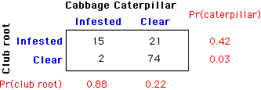

More subtle mis-interpretations of relationships
It is common for laymen (and even researchers) to mistake association between two variables in a survey as meaning that there is a causal relationship.
Possible explanations that do not rely on a causal relationship are:
With observational data, it is important to think carefully about possible other causes for two variables to appear related.
Eagle flight
The distances that eagles fly varies greatly and a biologist investigates whether flight distances depend on the weights of the birds. In a study that extended over twelve months, 120 different eagles were each tagged with a radio transmitter for a period of two weeks. The average flight length (km per day) and weight (kg) of each eagle were recorded. A scatterplot of these measurements is shown below.
The marginal relationship between flight length and weight shows a positive correlation, so it might be taken to imply that heavy eagles tend to fly further than light eagles, and a naive biologist might try to explain this in terms of their body mass providing the energy necessary to extend their range.
However this conclusion is flawed. The data were collected at different times during the year, and season is a third variable that affects both the weights of the birds and the distances that they fly.
Click the checkbox Slice, then use the slider to display the relationship separately for the birds that were observed in each month. We now see that there is no clear relationship between weight and flight length in the conditional relationship within each month.
The observed relationship between flight length and weight was caused by differences between the seasons.
Cabbage pests and diseases
A plant researcher is investigating the relationship between different diseases and pests of vegetable plants. The following data come from a sample of 112 vegetable gardens in which cabbages were grown organically. The contingency table shows the gardens that were classified as being infested with cabbage caterpillars and club root (a disease that leads to swollen roots).

A larger proportion of gardens that are clear of club root are also clear of cabbage caterpillars. Similarly, a larger proportion of gardens that are not infested by cabbage caterpillars are also free from club root.
There are three possible interpretations of this relationship between cabbage caterpillars and club root.
The data cannot help to resolve the issue of causation so it would be incorrect to report any causal relationship from these data.